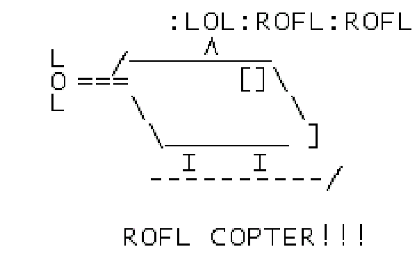
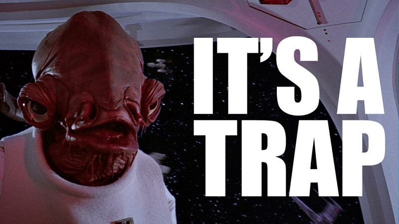
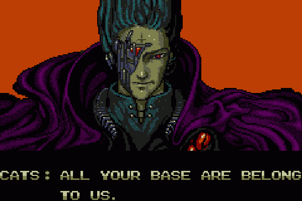
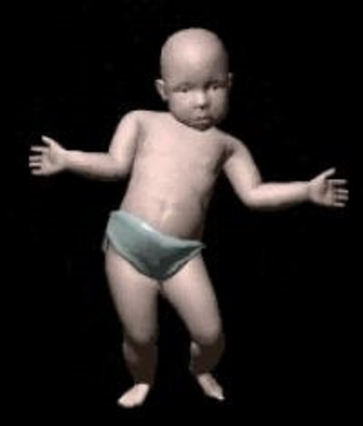
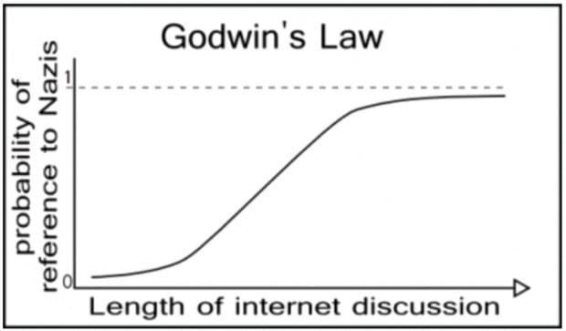

They are popular but not too mainstream. Memes must have enough wide circulation that people are able to recognize it as a meme. However, if it is too mainstream, the meme loses its power, causing it to be “dead.” Internet memes do not just carry the literal information that is provided in their content. They also carry an implicit message that, “Hey, I get this meme because I have the Internet culture knowhow.” This is illustrated in the fact that memes make sense if you have seen and therefore understand them, while an outsider of the meme culture would not get them or simply find them meaningless. When memes become too mainstream, they lose the implicit message of having the Internet culture knowhow, making them lose their power. In addition, a meme can simply become stale from being shared so much.
They possess the quality to produce derivatives. This is what differentiates a meme from simply a popular or viral post. Memes have the ability to create derivatives that follow the same format or idea. For example, that a text post or picture is much reblogged is not enough to make it a meme. There must be posts that copy the concept of an original type of content to make it a meme. However, defining what is considered a “derivative” can be difficult. For example, the Shakira’s hips meme from January 2015 had a specific format, so derivatives for this meme were easy to spot–any post that followed that format could more or less be considered a derivative of that meme. However, other memes do not follow such a strict format. For instance, the skeleton war meme did not follow any particular format, yet it was certainly considered a meme on Tumblr. Yet that there are many posts on a certain topic or issue does not constitute a meme. When Robin Williams passed away, there were many posts on Tumblr in memoriam Williams, yet it would be inappropriate, bordering on insensitive, to call the death of Robin Williams a meme.
They occur spontaneously. Successful memes on Tumblr are not usually forced. Typically, an idea naturally catches on and becomes popular.
They have a humorous element. Although what is considered funny can vary greatly from person to person, most memes have what can be considered a quality that is humorous. This is a rather tenuous requirement for a meme since what is funny for one may be annoying to another. However, this element need not be laugh-out-loud funny. It can be an aspect that is comical because it is absurd, surreal, a non sequitur, or observational (that is, “it’s funny because it’s true”).
6. ROFLcopter – c.2000 – 2001
The ROFLcopter meme is one of the earliest and most notable examples of using ASCII art. It first gained attention on forums such as Fark and was initially used to poke fun a new users who overused “l33t” (elite) acronyms such as ROFL (roll on the floor laughing). The usage of ROFLcopter became really popular after it was featured on the Something Awful forums.

The ROFLcopter meme is one of the earliest and most notable examples of using ASCII art. It first gained attention on forums such as Fark and was initially used to poke fun a new users who overused “l33t” (elite) acronyms such as ROFL (roll on the floor laughing). The usage of ROFLcopter became really popular after it was featured on the Something Awful forums.
In 2004, a website, roflcopter.com, was registered and only featured a GIF of an ASCII helicopter with the abbreviations “ROFL” and “LOL” as blades. The popularity of the meme eventually led to the creation of a Flash game, which then spawned a wave of other ASCII art animations based on popular internet slang.
5. It’s a Trap! – early 2000s
:)">It’s a Trap! is one of the earliest reaction image memes and is often used to warn people of a potential bait-and-switch. The meme features an image of and a quote from Admiral Ackbar, a character from the film Star Wars Episode VI: The Return of the Jedi. Although the movie is from 1983, the meme was not popularized until sometime in the early 2000s.
The original macro image was created by a Something Awful administrator and the meme initially was used as a reaction to photos of people who look sexually ambiguous. It spawned another popular meme, It’s a Tarp!, where the misspelling is intentional. Since its rise in popularity, the phrase has become a part of popular culture and even influenced the title of a Family Guy parody of Star Wars: Return of the Jedi, called “It’s a Trap!”
4. Hampster Dance – 1999
![you got lost in the dance](hampster_dance.jpg "Dance Dance Da Da Da Dance Dance Da Da Da Dance Dance Da Da Da Dance Dance Da Da Da Dance Dance Da Da Da Dance Dance Da Da Da Dance Dance Da Da Da Dance Dance Da Da Da Dance Dance Da Da Da Dance Dance Da Da Da Dance Dance Da Da Da Dance Dance Da Da Da Dance Dance Da Da Da Dance Dance Da Da Da Dance Dance Da Da Da Dance Dance Da Da Da Dance Dance Da Da Da Dance Dance Da Da Da Dance Dance Da Da Da Dance Dance Da Da Da Dance Dance Da Da Da Dance Dance Da Da Da Dance Dance Da Da Da Dance Dance Da Da Da Dance Dance Da Da Da Dance Dance Da Da Da Dance Dance Da Da Da Dance Dance Da Da Da Dance Dance Da Da Da Dance Dance Da Da Da Dance Dance Da Da Da Dance Dance Da Da Da Dance Dance Da Da Da Dance Dance Da Da Da Dance Dance Da Da Da Dance Dance Da Da Da Dance Dance Da Da Da Dance Dance Da Da Da Dance Dance Da Da Da Dance Dance Da Da Da Dance Dance Da Da Da Dance Dance Da Da Da Dance Dance Da Da Da Dance Dance Da Da Da Dance Dance Da Da Da Dance Dance Da Da Da Dance Dance Da Da Da Dance Dance Da Da Da Dance Dance Da Da Da Dance Dance Da Da Da Dance Dance Da Da Da Dance Dance Da Da Da Dance Dance Da Da Da Dance Dance Da Da Da Dance Dance Da Da Da Dance Dance Da Da Da Dance Dance Da Da Da Dance Dance Da Da Da Dance Dance Da Da Da Dance Dance Da Da Da Dance Dance Da Da Da Dance Dance Da Da Da Dance Dance Da Da Da Dance Dance Da Da Da Dance Dance Da Da Da Dance Dance Da Da Da Dance Dance Da Da Da Dance Dance Da Da Da Dance Dance Da Da Da Dance Dance Da Da Da Dance Dance Da Da Da Dance Dance Da Da Da Dance Dance Da Da Da Dance Dance Da Da Da Dance Dance Da Da Da Dance Dance Da Da Da Dance Dance Da Da Da Dance Dance Da Da Da Dance Dance Da Da Da Dance Dance Da Da Da Dance Dance Da Da Da Dance Dance Da Da Da Dance Dance Da Da Da Dance Dance Da Da Da Dance Dance Da Da Da Dance Dance Da Da Da Dance Dance Da Da Da Dance Dance Da Da Da Dance Dance Da Da Da Dance Dance Da Da Da Dance Dance Da Da Da Dance Dance Da Da Da Dance Dance Da Da Da Dance Dance Da Da Da Dance Dance Da Da Da Dance Dance Da Da Da Dance Dance Da Da Da Dance Dance Da Da Da Dance Dance Da Da Da Dance Dance Da Da Da Dance Dance Da Da Da Dance Dance Da Da Da Dance Dance Da Da Da Dance Dance Da Da Da Dance Dance Da Da Da Dance Dance Da Da Da Dance Dance Da Da Da Dance Dance Da Da Da Dance Dance Da Da Da Dance Dance Da Da Da Dance Dance Da Da Da Dance Dance Da Da Da Dance Dance Da Da Da Dance Dance Da Da Da Dance Dance Da Da Da Dance Dance Da Da Da Dance Dance Da Da Da Dance Dance Da Da Da Dance Dance Da Da Da Dance Dance Da Da Da Dance Dance Da Da Da Dance Dance Da Da Da Dance Dance Da Da Da Dance Dance Da Da Da Dance Dance Da Da Da Dance Dance Da Da Da Dance Dance Da Da Da Dance Dance Da Da Da Dance Dance Da Da Da Dance Dance Da Da Da Dance Dance Da Da Da Dance Dance Da Da Da Dance Dance Da Da Da Dance Dance Da Da Da Dance Dance Da Da Da Dance Dance Da Da Da Dance Dance Da Da Da Dance Dance Da Da Da Dance Dance Da Da Da Dance Dance Da Da Da Dance Dance Da Da Da Dance Dance Da Da Da Dance Dance Da Da Da Dance Dance Da Da Da Dance Dance Da Da Da Dance Dance Da Da Da Dance Dance Da Da Da Dance Dance Da Da Da Dance Dance Da Da Da Dance Dance Da Da Da Dance Dance Da Da Da Dance Dance Da Da Da Dance Dance Da Da Da Dance Dance Da Da Da Dance Dance Da Da Da Dance Dance Da Da Da Dance Dance Da Da Da Dance Dance Da Da Da Dance Dance Da Da Da Dance Dance Da Da Da Dance Dance Da Da Da Dance Dance Da Da Da Dance Dance Da Da Da Dance Dance Da Da Da Dance Dance Da Da Da Dance Dance Da Da Da Dance Dance Da Da Da Dance Dance Da Da Da Dance Dance Da Da Da Dance Dance Da Da Da Dance Dance Da Da Da Dance Dance Da Da Da Dance Dance Da Da Da Dance Dance Da Da Da Dance Dance Da Da Da Dance Dance Da Da Da Dance Dance Da Da Da Dance Dance Da Da Da Dance Dance Da Da Da Dance Dance Da Da Da Dance Dance Da Da Da Dance Dance Da Da Da Dance Dance Da Da Da Dance Dance Da Da Da Dance Dance Da Da Da Dance Dance Da Da Da Dance Dance Da Da Da Dance Dance Da Da Da Dance Dance Da Da Da Dance Dance Da Da Da Dance Dance Da Da Da Dance Dance Da Da Da Dance Dance Da Da Da Dance Dance Da Da Da Dance Dance Da Da Da Dance Dance Da Da Da Dance Dance Da Da Da Dance Dance Da Da Da Dance Dance Da Da Da Dance Dance Da Da Da Dance Dance Da Da Da Dance Dance Da Da Da Dance Dance Da Da Da Dance Dance Da Da Da Dance Dance Da Da Da Dance Dance Da Da Da Dance Dance Da Da Da Dance Dance Da Da Da Dance Dance Da Da Da Dance Dance Da Da Da Dance Dance Da Da Da Dance Dance Da Da Da Dance Dance Da Da Da Dance Dance Da Da Da Dance Dance Da Da Da Dance Dance Da Da Da Dance Dance Da Da Da Dance Dance Da Da Da Dance Dance Da Da Da Dance Dance Da Da Da Dance Dance Da Da Da Dance Dance Da Da Da Dance Dance Da Da Da Dance Dance Da Da Da Dance Dance Da Da Da Dance Dance Da Da Da Dance Dance Da Da Da Dance Dance Da Da Da Dance Dance Da Da Da Dance Dance Da Da Da Dance Dance Da Da Da Dance Dance Da Da Da Dance Dance Da Da Da Dance Dance Da Da Da Dance Dance Da Da Da Dance Dance Da Da Da Dance Dance Da Da Da Dance Dance Da Da Da Dance Dance Da Da Da Dance Dance Da Da Da Dance Dance Da Da Da Dance Dance Da Da Da Dance Dance Da Da Da Dance Dance Da Da Da Dance Dance Da Da Da Dance Dance Da Da Da Dance Dance Da Da Da Dance Dance Da Da Da Dance Dance Da Da Da Dance Dance Da Da Da Dance Dance Da Da Da Dance Dance Da Da Da Dance Dance Da Da Da Dance Dance Da Da Da Dance Dance Da Da Da Dance Dance Da Da Da Dance Dance Da Da Da Dance Dance Da Da Da Dance Dance Da Da Da Dance Dance Da Da Da Dance Dance Da Da Da Dance Dance Da Da Da Dance Dance Da Da Da Dance Dance Da Da Da Dance Dance Da Da Da Dance Dance Da Da Da Dance Dance Da Da Da Dance Dance Da Da Da Dance Dance Da Da Da Dance Dance Da Da Da Dance Dance Da Da Da Dance Dance Da Da Da Dance Dance Da Da Da Dance Dance Da Da Da Dance Dance Da Da Da Dance Dance Da Da Da Dance Dance Da Da Da Dance Dance Da Da Da Dance Dance Da Da Da Dance Dance Da Da Da Dance Dance Da Da Da Dance Dance Da Da Da Dance Dance Da Da Da Dance Dance Da Da Da Dance Dance Da Da Da Dance Dance Da Da Da Dance Dance Da Da Da Dance Dance Da Da Da Dance Dance Da Da Da Dance Dance Da Da Da Dance Dance Da Da Da Dance Dance Da Da Da Dance Dance Da Da Da Dance Dance Da Da Da Dance Dance Da Da Da Dance Dance Da Da Da Dance Dance Da Da Da Dance Dance Da Da Da Dance Dance Da Da Da Dance Dance Da Da Da Dance Dance Da Da Da Dance Dance Da Da Da Dance Dance Da Da Da Dance Dance Da Da Da Dance Dance Da Da Da Dance Dance Da Da Da Dance Dance Da Da Da Dance Dance Da Da Da Dance Dance Da Da Da Dance Dance Da Da Da Dance Dance Da Da Da Dance Dance Da Da Da Dance Dance Da Da Da Dance Dance Da Da Da Dance Dance Da Da Da Dance Dance Da Da Da Dance Dance Da Da Da Dance Dance Da Da Da Dance Dance Da Da Da Dance Dance Da Da Da Dance Dance Da Da Da Dance Dance Da Da Da Dance Dance Da Da Da Dance Dance Da Da Da Dance Dance Da Da Da Dance Dance Da Da Da Dance Dance Da Da Da Dance Dance Da Da Da Dance Dance Da Da Da Dance Dance Da Da Da Dance Dance Da Da Da Dance Dance Da Da Da Dance Dance Da Da Da Dance Dance Da Da Da Dance Dance Da Da Da Dance Dance Da Da Da Dance Dance Da Da Da Dance Dance Da Da Da Dance Dance Da Da Da Dance Dance Da Da Da Dance Dance Da Da Da Dance Dance Da Da Da Dance Dance Da Da Da Dance Dance Da Da Da Dance Dance Da Da Da Dance Dance Da Da Da Dance Dance Da Da Da Dance Dance Da Da Da Dance Dance Da Da Da Dance Dance Da Da Da Dance Dance Da Da Da Dance Dance Da Da Da Dance Dance Da Da Da Dance Dance Da Da Da Dance Dance Da Da Da Dance Dance Da Da Da Dance Dance Da Da Da Dance Dance Da Da Da Dance Dance Da Da Da Dance Dance Da Da Da Dance Dance Da Da Da Dance Dance Da Da Da Dance Dance Da Da Da Dance Dance Da Da Da Dance Dance Da Da Da Dance Dance Da Da Da Dance Dance Da Da Da Dance Dance Da Da Da Dance Dance Da Da Da Dance Dance Da Da Da Dance Dance Da Da Da Dance Dance Da Da Da Dance Dance Da Da Da Dance Dance Da Da Da Dance Dance Da Da Da Dance Dance Da Da Da Dance Dance Da Da Da Dance Dance Da Da Da Dance Dance Da Da Da Dance Dance Da Da Da Dance Dance Da Da Da Dance Dance Da Da Da Dance Dance Da Da Da Dance Dance Da Da Da Dance Dance Da Da Da Dance Dance Da Da Da Dance Dance Da Da Da Dance Dance Da Da Da Dance Dance Da Da Da Dance Dance Da Da Da Dance Dance Da Da Da Dance Dance Da Da Da Dance Dance Da Da Da Dance Dance Da Da Da Dance Dance Da Da Da Dance Dance Da Da Da Dance Dance Da Da Da Dance Dance Da Da Da Dance Dance Da Da Da Dance Dance Da Da Da Dance Dance Da Da Da Dance Dance Da Da Da Dance Dance Da Da Da Dance Dance Da Da Da Dance Dance Da Da Da Dance Dance Da Da Da Dance Dance Da Da Da Dance Dance Da Da Da Dance Dance Da Da Da Dance Dance Da Da Da Dance Dance Da Da Da Dance Dance Da Da Da Dance Dance Da Da Da Dance Dance Da Da Da Dance Dance Da Da Da Dance Dance Da Da Da Dance Dance Da Da Da Dance Dance Da Da Da Dance Dance Da Da Da Dance Dance Da Da Da Dance Dance Da Da Da Dance Dance Da Da Da Dance Dance Da Da Da Dance Dance Da Da Da Dance Dance Da Da Da Dance Dance Da Da Da Dance Dance Da Da Da Dance Dance Da Da Da Dance Dance Da Da Da Dance Dance Da Da Da Dance Dance Da Da Da Dance Dance Da Da Da Dance Dance Da Da Da Dance Dance Da Da Da Dance Dance Da Da Da Dance Dance Da Da Da Dance Dance Da Da Da Dance Dance Da Da Da Dance Dance Da Da Da Dance Dance Da Da Da Dance Dance Da Da Da Dance Dance Da Da Da Dance Dance Da Da Da Dance Dance Da Da Da Dance Dance Da Da Da Dance Dance Da Da Da Dance Dance Da Da Da Dance Dance Da Da Da Dance Dance Da Da Da Dance Dance Da Da Da Dance Dance Da Da Da Dance Dance Da Da Da Dance Dance Da Da Da Dance Dance Da Da Da Dance Dance Da Da Da Dance Dance Da Da Da Dance Dance Da Da Da Dance Dance Da Da Da Dance Dance Da Da Da Dance Dance Da Da Da Dance Dance Da Da Da Dance Dance Da Da Da Dance Dance Da Da Da Dance Dance Da Da Da Dance Dance Da Da Da Dance Dance Da Da Da Dance Dance Da Da Da Dance Dance Da Da Da Dance Dance Da Da Da Dance Dance Da Da Da Dance Dance Da Da Da Dance Dance Da Da Da Dance Dance Da Da Da Dance Dance Da Da Da Dance Dance Da Da Da Dance Dance Da Da Da Dance Dance Da Da Da Dance Dance Da Da Da Dance Dance Da Da Da Dance Dance Da Da Da Dance Dance Da Da Da Dance Dance Da Da Da Dance Dance Da Da Da Dance Dance Da Da Da Dance Dance Da Da Da Dance Dance Da Da Da Dance Dance Da Da Da Dance Dance Da Da Da Dance Dance Da Da Da Dance Dance Da Da Da Dance Dance Da Da Da Dance Dance Da Da Da Dance Dance Da Da Da Dance Dance Da Da Da Dance Dance Da Da Da Dance Dance Da Da Da Dance Dance Da Da Da Dance Dance Da Da Da Dance Dance Da Da Da Dance Dance Da Da Da Dance Dance Da Da Da Dance Dance Da Da Da Dance Dance Da Da Da Dance Dance Da Da Da Dance Dance Da Da Da Dance Dance Da Da Da Dance Dance Da Da Da Dance Dance Da Da Da Dance Dance Da Da Da Dance Dance Da Da Da Dance Dance Da Da Da Dance Dance Da Da Da Dance Dance Da Da Da Dance Dance Da Da Da Dance Dance Da Da Da Dance Dance Da Da Da Dance Dance Da Da Da Dance Dance Da Da Da Dance Dance Da Da Da Dance Dance Da Da Da Dance Dance Da Da Da Dance Dance Da Da Da Dance Dance Da Da Da Dance Dance Da Da Da Dance Dance Da Da Da Dance Dance Da Da Da Dance Dance Da Da Da Dance Dance Da Da Da Dance Dance Da Da Da Dance Dance Da Da Da Dance Dance Da Da Da Dance Dance Da Da Da Dance Dance Da Da Da Dance Dance Da Da Da Dance Dance Da Da Da Dance Dance Da Da Da Dance Dance Da Da Da Dance Dance Da Da Da Dance Dance Da Da Da Dance Dance Da Da Da Dance Dance Da Da Da Dance Dance Da Da Da Dance Dance Da Da Da Dance Dance Da Da Da Dance Dance Da Da Da Dance Dance Da Da Da Dance Dance Da Da Da Dance Dance Da Da Da Dance Dance Da Da Da Dance Dance Da Da Da Dance Dance Da Da Da Dance Dance Da Da Da Dance Dance Da Da Da Dance Dance Da Da Da Dance Dance Da Da Da Dance Dance Da Da Da Dance Dance Da Da Da Dance Dance Da Da Da Dance Dance Da Da Da Dance Dance Da Da Da Dance Dance Da Da Da Dance Dance Da Da Da Dance Dance Da Da Da Dance Dance Da Da Da Dance Dance Da Da Da Dance Dance Da Da Da Dance Dance Da Da Da Dance Dance Da Da Da Dance Dance Da Da Da Dance Dance Da Da Da Dance Dance Da Da Da Dance Dance Da Da Da Dance Dance Da Da Da Dance Dance Da Da Da Dance Dance Da Da Da Dance Dance Da Da Da Dance Dance Da Da Da Dance Dance Da Da Da Dance Dance Da Da Da Dance Dance Da Da Da Dance Dance Da Da Da Dance Dance Da Da Da Dance Dance Da Da Da Dance Dance Da Da Da Dance Dance Da Da Da Dance Dance Da Da Da Dance Dance Da Da Da Dance Dance Da Da Da Dance Dance Da Da Da Dance Dance Da Da Da Dance Dance Da Da Da Dance Dance Da Da Da Dance Dance Da Da Da Dance Dance Da Da Da Dance Dance Da Da Da Dance Dance Da Da Da Dance Dance Da Da Da Dance Dance Da Da Da Dance Dance Da Da Da Dance Dance Da Da Da Dance Dance Da Da Da Dance Dance Da Da Da Dance Dance Da Da Da Dance Dance Da Da Da Dance Dance Da Da Da Dance Dance Da Da Da Dance Dance Da Da Da Dance Dance Da Da Da Dance Dance Da Da Da Dance Dance Da Da Da Dance Dance Da Da Da Dance Dance Da Da Da Dance Dance Da Da Da Dance Dance Da Da Da Dance Dance Da Da Da Dance Dance Da Da Da Dance Dance Da Da Da Dance Dance Da Da Da Dance Dance Da Da Da Dance Dance Da Da Da Dance Dance Da Da Da Dance Dance Da Da Da Dance Dance Da Da Da Dance Dance Da Da Da Dance Dance Da Da Da Dance Dance Da Da Da Dance Dance Da Da Da Dance Dance Da Da Da Dance Dance Da Da Da Dance Dance Da Da Da Dance Dance Da Da Da Dance Dance Da Da Da Dance Dance Da Da Da Dance Dance Da Da Da Dance Dance Da Da Da Dance Dance Da Da Da Dance Dance Da Da Da Dance Dance Da Da Da Dance Dance Da Da Da Dance Dance Da Da Da Dance Dance Da Da Da Dance Dance Da Da Da Dance Dance Da Da Da Dance Dance Da Da Da Dance Dance Da Da Da Dance Dance Da Da Da Dance Dance Da Da Da Dance Dance Da Da Da Dance Dance Da Da Da Dance Dance Da Da Da Dance Dance Da Da Da Dance Dance Da Da Da Dance Dance Da Da Da Dance Dance Da Da Da Dance Dance Da Da Da Dance Dance Da Da Da Dance Dance Da Da Da Dance Dance Da Da Da Dance Dance Da Da Da Dance Dance Da Da Da Dance Dance Da Da Da Dance Dance Da Da Da Dance Dance Da Da Da Dance Dance Da Da Da Dance Dance Da Da Da Dance Dance Da Da Da Dance Dance Da Da Da Dance Dance Da Da Da Dance Dance Da Da Da Dance Dance Da Da Da Dance Dance Da Da Da Dance Dance Da Da Da Dance Dance Da Da Da Dance Dance Da Da Da Dance Dance Da Da Da Dance Dance Da Da Da Dance Dance Da Da Da Dance Dance Da Da Da Dance Dance Da Da Da Dance Dance Da Da Da Dance Dance Da Da Da Dance Dance Da Da Da Dance Dance Da Da Da Dance Dance Da Da Da Dance Dance Da Da Da Dance Dance Da Da Da Dance Dance Da Da Da Dance Dance Da Da Da Dance Dance Da Da Da Dance Dance Da Da Da Dance Dance Da Da Da Dance Dance Da Da Da Dance Dance Da Da Da Dance Dance Da Da Da Dance Dance Da Da Da Dance Dance Da Da Da Dance Dance Da Da Da Dance Dance Da Da Da Dance Dance Da Da Da Dance Dance Da Da Da Dance Dance Da Da Da Dance Dance Da Da Da Dance Dance Da Da Da Dance Dance Da Da Da Dance Dance Da Da Da Dance Dance Da Da Da Dance Dance Da Da Da Dance Dance Da Da Da Dance Dance Da Da Da Dance Dance Da Da Da Dance Dance Da Da Da Dance Dance Da Da Da Dance Dance Da Da Da Dance Dance Da Da Da Dance Dance Da Da Da Dance Dance Da Da Da Dance Dance Da Da Da Dance Dance Da Da Da Dance Dance Da Da Da Dance Dance Da Da Da Dance Dance Da Da Da Dance Dance Da Da Da Dance Dance Da Da Da Dance Dance Da Da Da Dance Dance Da Da Da Dance Dance Da Da Da Dance Dance Da Da Da Dance Dance Da Da Da Dance Dance Da Da Da Dance Dance Da Da Da Dance Dance Da Da Da Dance Dance Da Da Da Dance Dance Da Da Da Dance Dance Da Da Da Dance Dance Da Da Da Dance Dance Da Da Da Dance Dance Da Da Da Dance Dance Da Da Da Dance Dance Da Da Da Dance Dance Da Da Da Dance Dance Da Da Da Dance Dance Da Da Da Dance Dance Da Da Da Dance Dance Da Da Da Dance Dance Da Da Da Dance Dance Da Da Da Dance Dance Da Da Da Dance Dance Da Da Da Dance Dance Da Da Da Dance Dance Da Da Da Dance Dance Da Da Da Dance Dance Da Da Da Dance Dance Da Da Da Dance Dance Da Da Da Dance Dance Da Da Da Dance Dance Da Da Da Dance Dance Da Da Da Dance Dance Da Da Da Dance Dance Da Da Da Dance Dance Da Da Da Dance Dance Da Da Da Dance Dance Da Da Da Dance Dance Da Da Da Dance Dance Da Da Da Dance Dance Da Da Da Dance Dance Da Da Da Dance Dance Da Da Da Dance Dance Da Da Da Dance Dance Da Da Da Dance Dance Da Da Da Dance Dance Da Da Da Dance Dance Da Da Da Dance Dance Da Da Da Dance Dance Da Da Da Dance Dance Da Da Da Dance Dance Da Da Da Dance Dance Da Da Da Dance Dance Da Da Da Dance Dance Da Da Da Dance Dance Da Da Da Dance Dance Da Da Da Dance Dance Da Da Da Dance Dance Da Da Da Dance Dance Da Da Da Dance Dance Da Da Da Dance Dance Da Da Da Dance Dance Da Da Da Dance Dance Da Da Da Dance Dance Da Da Da Dance Dance Da Da Da Dance Dance Da Da Da Dance Dance Da Da Da Dance Dance Da Da Da Dance Dance Da Da Da Dance Dance Da Da Da Dance Dance Da Da Da Dance Dance Da Da Da Dance Dance Da Da Da Dance Dance Da Da Da Dance Dance Da Da Da Dance Dance Da Da Da Dance Dance Da Da Da Dance Dance Da Da Da Dance Dance Da Da Da Dance Dance Da Da Da Dance Dance Da Da Da Dance Dance Da Da Da Dance Dance Da Da Da Dance Dance Da Da Da Dance Dance Da Da Da Dance Dance Da Da Da Dance Dance Da Da Da Dance Dance Da Da Da Dance Dance Da Da Da Dance Dance Da Da Da Dance Dance Da Da Da Dance Dance Da Da Da Dance Dance Da Da Da Dance Dance Da Da Da Dance Dance Da Da Da Dance Dance Da Da Da Dance Dance Da Da Da Dance Dance Da Da Da Dance Dance Da Da Da Dance Dance Da Da Da Dance Dance Da Da Da Dance Dance Da Da Da Dance Dance Da Da Da Dance Dance Da Da Da Dance Dance Da Da Da Dance Dance Da Da Da Dance Dance Da Da Da Dance Dance Da Da Da Dance Dance Da Da Da Dance Dance Da Da Da Dance Dance Da Da Da Dance Dance Da Da Da Dance Dance Da Da Da Dance Dance Da Da Da Dance Dance Da Da Da Dance Dance Da Da Da Dance Dance Da Da Da Dance Dance Da Da Da Dance Dance Da Da Da Dance Dance Da Da Da Dance Dance Da Da Da Dance Dance Da Da Da Dance Dance Da Da Da Dance Dance Da Da Da Dance Dance Da Da Da Dance Dance Da Da Da Dance Dance Da Da Da Dance Dance Da Da Da Dance Dance Da Da Da Dance Dance Da Da Da Dance Dance Da Da Da Dance Dance Da Da Da Dance Dance Da Da Da Dance Dance Da Da Da Dance Dance Da Da Da Dance Dance Da Da Da Dance Dance Da Da Da Dance Dance Da Da Da Dance Dance Da Da Da Dance Dance Da Da Da Dance Dance Da Da Da Dance Dance Da Da Da Dance Dance Da Da Da Dance Dance Da Da Da Dance Dance Da Da Da Dance Dance Da Da Da Dance Dance Da Da Da Dance Dance Da Da Da Dance Dance Da Da Da Dance Dance Da Da Da Dance Dance Da Da Da Dance Dance Da Da Da Dance Dance Da Da Da Dance Dance Da Da Da Dance Dance Da Da Da Dance Dance Da Da Da Dance Dance Da Da Da Dance Dance Da Da Da Dance Dance Da Da Da Dance Dance Da Da Da Dance Dance Da Da Da Dance Dance Da Da Da Dance Dance Da Da Da Dance Dance Da Da Da Dance Dance Da Da Da Dance Dance Da Da Da Dance Dance Da Da Da Dance Dance Da Da Da Dance Dance Da Da Da Dance Dance Da Da Da Dance Dance Da Da Da Dance Dance Da Da Da Dance Dance Da Da Da Dance Dance Da Da Da Dance Dance Da Da Da Dance Dance Da Da Da Dance Dance Da Da Da Dance Dance Da Da Da Dance Dance Da Da Da Dance Dance Da Da Da Dance Dance Da Da Da Dance Dance Da Da Da Dance Dance Da Da Da Dance Dance Da Da Da Dance Dance Da Da Da Dance Dance Da Da Da Dance Dance Da Da Da Dance Dance Da Da Da Dance Dance Da Da Da Dance Dance Da Da Da Dance Dance Da Da Da Dance Dance Da Da Da Dance Dance Da Da Da")
Hampster Dance, which is purposely misspelled, is one of the earliest single-purpose websites. The site was created by Canadian art student Deidre LeCarte in 1998 and featured rows of animated GIFs of hamsters and other small rodents dancing to a sped-up sample of Roger Miller’s “Whistle Stop”. LaCarte created the webpage because she was in a competition with her sister and best friend to see which one of them could generate the most web traffic. The site’s full name was Hampton’s Hamster House in honor of her pet hamster, Hampton Hamster.
LaCarte’s website did not get popular until March 1999, by that summer the site had over 17 million views. The popularity of the site led to the release of a song called “The Hampsterdance Song”, which was produced by The Boomtang Boys and released in 2000 – it was based on a sample of “Whistle Stop”. The song has been featured in few films and at one point, an animated series based on the hamsters was planned by Canadian animation studio Nelvana.
3. All Your Base Are Belong to Us – 1998
The popular internet catchphrase “All Your Base Are Belong to Us” first grew in popularity sometime around 1998. The phrase features a mistranslation from the 1992 Mega Drive port of the 1989 Japanese arcade game Zero Wing. A more accurate translation of the original Japanese script is, “With the cooperation of Federation Forces, CATS have taken over all of your bases.”
The meme was widely popularized on the Something Awful message forums when Kansas City computer programmer and part-time DJ Jefferey Ray Roberts uploaded a techno dance track, “Invasion of the Gabber Robots”, which remixed some of the Zero Wing video game music with a voice-over phrase “All your base are belong to us” in 2000.
Since then, the phrase has been featured throughout popular culture including numerous articles, books, comics, clothing, movies, radio shows, songs, TV shows, video games, websites, and webcomics.
2. Dancing Baby – 1996
Dancing Baby or Baby Cha-Cha is one of the oldest viral internet sensations and gained popularity through email chains in 1996. The viral short video features a 3D rendered baby dancing to the intro of “Hooked on a Feeling” by the Swedish rock group Blue Swede. It was released as a product sample source file in “Character Studio”, a 3D character animation software product.
The animated GIF, which is what eventually spread around the internet, was created by web developer John Woodell, who was demonstrating the movie-to-gif process. At its peak, the dancing baby was so popular that it was featured in Fox’s Ally McBeal as a metaphor of the titular character’s biological clock.
1. Godwin’s Law – 1990
Godwin’s Law is one of the oldest and most well-known internet memes that is still relevant today. It is an internet adage, coined by Mike Godwin in 1990 on the Usenet newsgroup discussion board, that says,“As an online discussion grows longer, the probability of a comparison involving Hitler approaches 1.” This means that as a conversation on the internet goes on, the likelihood of someone mentioning Adolf Hitler or Nazis increases.
Today, people use Godwin’s Law to mark the end of a conversation once Hitler or Nazis have been mentioned, noting that the person who made the reference to Hitler “lost” the discussion.